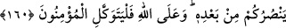

taşıdıklarına, ancak Allah Teâlâ’nın, peygamberleri, bu nefsin neticelerinden ve
gereğini yapmaktan koruduğuna dikkat çekilmektedir. Sen de bu konuyu iyi anla; çünkü
bu, gerçekten çok ince düşünmeyi gerektirecek nâzik bir konudur.
160. Allah size yardım ederse, artık size üstün gelecek hiç kimse yoktur. Eğer
sizi bırakıverirse, ondan sonra size kim yardım eder? Mü’minler ancak Allah’a
güvenip dayanmalıdırlar.
Yardım iki türlü olur. İnsanlara yardım ve düşmandan korumak. O zaman âyet: Bedir
günü yaptığı gibi Allah Teâlâ size yardım ederse ve düşmanınızdan korursa, artık kimse
sizi mağlup edemez, demek olur. “Yüzüstü bırakmak” şeklinde ifade ettiğimiz (
);
yardımı esirgemek ve helâke terketmek demektir. Uhud günü yaptığı gibi, sizi kendi
hâlinize bırakır ve yardım etmezse, Allah’ın bu yüzüstü bırakışından sonra, size kim
yardım edebilir?
Bu ifade, zât ve sıfat olarak hiçbir yardımcının olamayacağını mübâlağalı bir şekilde
ifade eden bir istifhâm-ı inkârîdir. Bu ifade ayrıca, zafer vb. bütün işlerin Allah’a ait
olduğuna dikkat çekiyor. Bu sebeple de kendisine dayanıp güvenmelerini şöyle
emrediyor: Mü’minler, sadece Allah’a tevekkül etsinler. Allah’dan başka
yardımcılarının olmadığını bildikleri ve Allah’a daha önceden inanmış oldukları için
tevekkülü, sadece O’na has kılsınlar. Allah’dan başka yardımcı aramamak; rızkını
sadece O’ndan beklemek ve ilmine Allah’dan başkasını şâhid tutmamak tevekkül
kapsamına dâhildir.
İmrân b. Husayn (r.a.)’dan rivâyet edildiğine göre, Hz. Peygamber şöyle buyurmuş:
– “Ümmetimden yetmiş bin kişi cennete hesapsız kitapsız girecektir.”
– “Bunlar kimlerdir yâ Rasûlallah?” diye sorulunca da şöyle cevap vermiş:
– “Bunlar, cimrilik etmeyenler, sihir yaptırmayanlar, fal baktırmayanlar ve yalnızca
Allah’a tevekkül edenlerdir.”
Ukkâşe b. Mıhsan (r.a.) hemen:
– “Yâ Rasûlallah, duâ et de Allah beni de onlara dâhil etsin” demiş.
Hz. Peygamber de Ukkâşe (r.a.)’ye “sen de onlardansın” diye cevap vermiş. Sonra
bir sahâbî daha kalkıp:
– “Yâ Rasûlallah duâ et de Allah beni de onlara dâhil etsin” deyince, Peygamber
Efendimiz: “Ukkâşe senden önce davrandı” buyurmuş.[133]
Hz. Peygamber şöyle buyurmaktadır: “Şayet Allah’a hakkıyla tevekkül etseniz, Allah
sabahleyin karnı bomboş olan bir kuşu rızıklandırıp akşam vakti karnını dolu olarak